交换与导出
项目保存在你的 macOS 设备上的 LemmaLoom 资料库中（见第 2 章“开始使用”中的工作保存在哪里）。通过导出和导入，可以把工作带出资料库，或者放进资料库。选用哪种文件类型，取决于下一个打开导出文件的人是谁。
本章的所有示例都使用名为“气候辩论”的项目。项目中有十一篇虚构的观点文章，作者是气候活动人士和气候怀疑论者，例如“时间不多了”和“模型总是失准”；此外还有 PDF 文档“2024 热浪报告”、网页“碳税之争”和录音“电台辩论”。“时间不多了 (英语)”是“时间不多了”的译文，算上它，项目共有 15 个文档。要跟着示例操作，请选取文件 ▸ 导入 ▸ 示例项目。导入后，LemmaLoom 会自动在你的资料库中新建一个名为“气候辩论”的项目，项目已建立索引，内容采用界面语言。
选择格式
| 你想要 | 文件 | 命令 |
|---|---|---|
| 备份项目，或把项目转移到另一台 Mac | LemmaLoom 归档（.llz） | 文件 ▸ 导出 ▸ LemmaLoom 项目 |
| 把一个文档集或几个文档连同你所做的编码交给同事 | LemmaLoom 归档（.llz） | 文件 ▸ 导出 ▸ LemmaLoom 文档集或 LemmaLoom 文档 |
| 读入归档 | LemmaLoom 归档（.llz） | 文件 ▸ 导入 ▸ LemmaLoom 归档 |
| 把项目交给支持 REFI-QDA 标准的软件 | REFI-QDA 项目（.qdpx） | 文件 ▸ 导出 ▸ REFI-QDA 项目 |
| 打开在这类软件中创建的项目 | REFI-QDA 项目（.qdpx） | 文件 ▸ 导入 ▸ REFI-QDA 项目 |
| 共享不含任何文档的编码系统 | REFI-QDA 编码本（.qdc） | 文件 ▸ 导出 ▸ REFI-QDA 编码本和文件 ▸ 导入 ▸ REFI-QDA 编码本 |
| 在电子表格或统计程序中处理数字 | CSV | 表格的导出按钮 |
| 把图表或图示放进论文或幻灯片 | PNG 或 PDF | 图表的导出按钮 |
| 保存查询结果，同时记下它是怎样得出的 | Markdown | 查询结果的导出按钮 |
只要材料仍留在 LemmaLoom 之内，一般就选择导出 LemmaLoom 归档，例如你自己做备份、把工作转移到另一台 Mac，或者把 LemmaLoom 文档交给同样使用 LemmaLoom 的同事。归档保留索引、已存储的查询以及译文与原文之间的关联，所以材料导入后马上就能使用。如果工作要进出 LemmaLoom（来自别处，或者要送往别处），就应改用 REFI-QDA 项目。这种格式不保留 LemmaLoom 的索引结构，也不保留以索引为基础的任何功能。
文件 ▸ 导入 ▸ REFI-QDA 编码本以及文件 ▸ 导出下列出的所有命令都作用于当前项目（导航栏中以粗体显示的项目）。选中项目之前，这些命令都不可用。
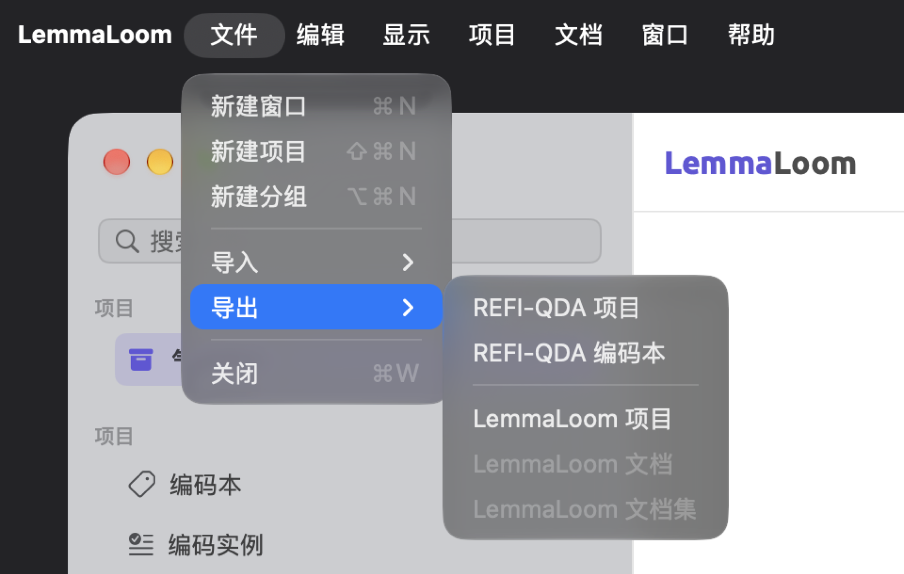
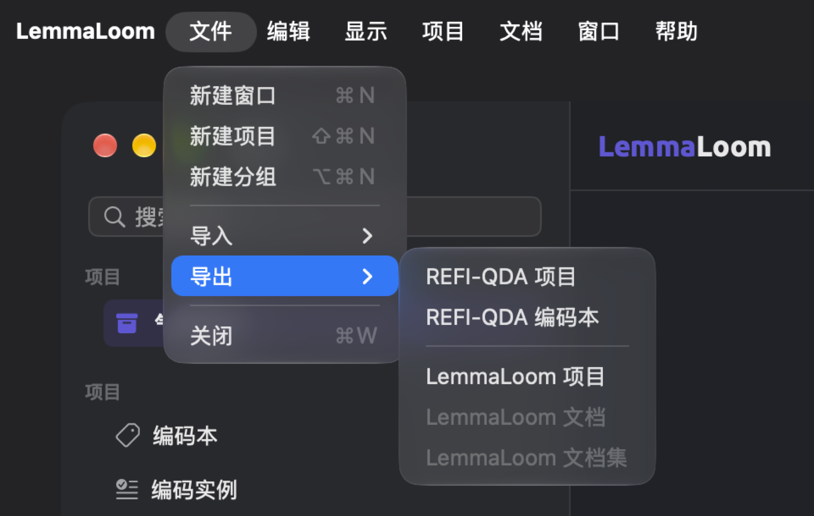
你也可以在访达中连按 .llz、.qdpx 或 .qdc 文件来导入它们。如果 LemmaLoom 尚未启动，这样做会将它打开。项目归档和 REFI-QDA 项目都会各自成为一个新项目。导入编码本、文档集归档或文档归档时，内容会导入当前项目，所以请确认当前项目是正确的那个。如果你的 Mac 上有其他程序会打开 .qdpx 或 .qdc 文件，也可以右键点按文件，然后选取打开方式 ▸ LemmaLoom。
关键术语
- LemmaLoom 归档是一种导出文件，其中包含一个完整的项目、一个文档集或一组选定的文档，以及它们在 LemmaLoom 中的全部数据，例如索引和录音。
- REFI-QDA 是一种开放的数据交换格式，用于在质性分析软件之间转移项目。这种格式处理项目中的文档、编码、编码实例、备忘录、链接、变量（即 LemmaLoom 中的属性）和集合。
- 范围是归档的来源（整个项目、一个文档集或你选定的文档），它决定归档包含哪些内容，以及归档如何导入。
- 文档集归档或选定文档的归档会按名称与接收项目中已有的分组、编码和属性对应起来。这种匹配在导入时进行。
交换对话框
REFI-QDA 文件和 LemmaLoom 归档的导入与导出都通过一个对话框进行，对话框附着在主窗口顶部。你选好文件或在访达中连按文件后，对话框会立即出现。
对话框显示一个标题（例如正在导出 LemmaLoom 归档）、正在导出或导入的文件名，以及一个随导入或导出的进展逐渐填满的进度环。导出 REFI-QDA 项目和编码本以及导入编码本时，进度环换成一个旋转的指示器。导入或导出所需的时间主要取决于项目和录音的大小。
两项交换操作不能同时进行。在一项交换完成之前，文件菜单和导航栏中所有与导入、导出 REFI-QDA 文件或归档相关的命令都不可用。活动窗口把正在进行的交换列在正在导入或正在导出类别下。详细说明见第 4 章“导入资料”中的活动窗口。
导出完成后，对话框显示新的标题，例如 LemmaLoom 归档已导出。交换完成之前，完成一直不可用，将鼠标指针悬停在它上面会显示运行中。点按完成即可关闭对话框。
导入完成后，对话框会自动关闭。归档或 REFI-QDA 文件中包含的项目会成为当前项目；新导入的文档和编码会出现在接收它们的项目中。
如果导入或导出过程中出了问题，对话框会保持打开。标题中显示失败消息（导入失败或导出失败），下面是文件名和原因。可能的原因包括：
| 消息 | 含义 |
|---|---|
| 该文件不是 REFI-QDA 项目。 | 这个 .qdpx 文件中没有项目描述。它可能已经损坏，或者是由其他类型的文件改名而来。 |
| 该文件不是 REFI-QDA 编码本。 | 这个 .qdc 文件不是编码本。 |
| 该文件不是 LemmaLoom 归档。 | 这个 .llz 文件不是由 LemmaLoom 写出的，或者已经损坏。 |
| 此归档由更新版本的 LemmaLoom 创建。 | 请更新 LemmaLoom，然后再次导入这个归档。 |
| 请先打开一个项目，再导入。 | 这个文件包含的是编码本、文档集或文档，它们要导入现有项目，而当时没有当前项目。请在导航栏中点按一个项目，然后重试。 |
| 该文件不是有效的归档。或该归档已损坏。 | 每个 .qdpx 和 .llz 文件都是 ZIP 文件，而这个文件不完整或已经损坏。请从来源处重新拷贝一份。 |
| 该归档使用了 LemmaLoom 无法读取的格式。 | 这个 ZIP 文件设有密码保护，或者使用了常用的 Deflate 以外的压缩方法。请在另一个程序中重新导出，不要设置密码。 |
| 资料库不可用。 | LemmaLoom 无法访问它的资料库或该项目。请等导航栏列出你的项目后再试。 |
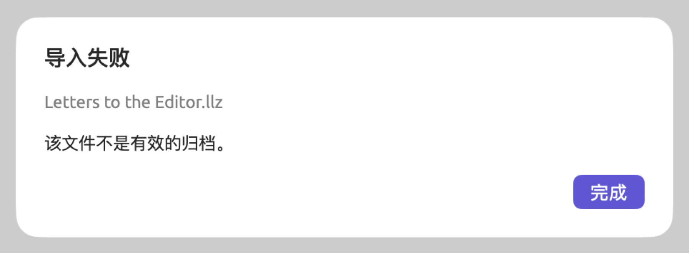
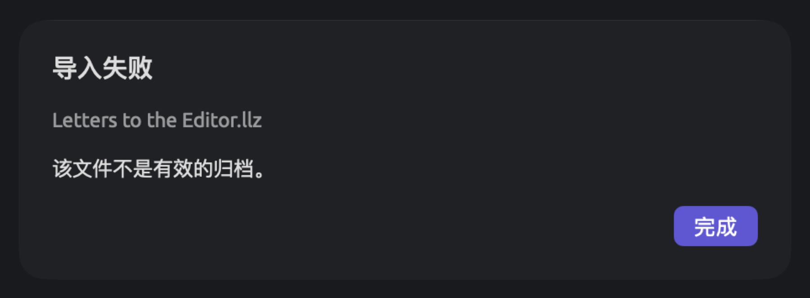
点按完成即可关闭对话框。如果 LemmaLoom 未能成功导出文件，不完整的文件会被删除。如果你当时选择了替换一个已有的文件，被替换的文件也可能丢失。
LemmaLoom 归档
归档适用于以下情况：在删除项目之前做备份，把项目转移到另一台电脑，或者把项目的一部分分享给同样使用 LemmaLoom 的同事。只有归档能保留 LemmaLoom 的索引和你已存储的查询。
归档的内容
无论范围如何，归档中的每个文档都包含以下内容：
- 编辑后的文档文本；对于音频和视频文档，还有带说话人和时间的转写文本，以及一份录音副本；
- 文档的元数据，包括文档信息、颜色、标签以及它在项目各个属性上的取值；
- 它的索引，包括句子、词、词元、词类和句子树，以及内置分析器和自定义分析器产生的结果（见第 21 章“分析与索引”）；
- 它的编码实例、书签和备忘录；
- 它的译文，译文本身也包含文本、索引和编码实例。
其余内容取决于范围。编码可以限定于单个文档或文档集（见第 7 章“编码”中的编码的适用范围），下文把这类编码称为受限编码。
| 内容 | 项目 | 文档集 | 选定的文档 |
|---|---|---|---|
| 文档 | 项目的所有文档 | 文档集中的文档及其译文 | 选定的文档及其译文 |
| 编码 | 所有编码，连同它们的备忘录 | 归档中的编码实例、备忘录和查询用到的编码，限定于其中某个文档或该文档集的编码，以及所有这些编码的上级编码，连同它们的备忘录 | 归档中的编码实例、备忘录和查询用到的编码，限定于其中某个文档的编码，以及所有这些编码的上级编码，连同它们的备忘录 |
| 编码集 | 全部 | 无 | 无 |
| 链接 | 全部 | 两端都位于归档文档中的链接 | 与文档集相同 |
| 分组 | 全部 | 归档文档所属的分组，以及文档集条件中指定的分组 | 归档文档所属的分组 |
| 文档集 | 所有文档集和智能文档集 | 导出的这个文档集；如果是智能文档集，连同它的条件 | 无 |
| 属性 | 全部 | 除定义在归档未收入的编码上的属性之外的全部属性，连同归档中文档、编码实例和备忘录的取值 | 与文档集相同 |
| 词典 | 全部 | 无 | 无 |
| 已存储的查询 | 为项目、其文档集、其标签或其文档存储的查询 | 为项目、该文档集或其中某个文档存储的查询 | 为项目或其中某个文档存储的查询 |
| 自定义分析器 | 其发现与文档一起保存的分析器、所含查询用到的分析器，以及由所含查询生成的分析器 | 与项目相同 | 与项目相同 |
| 项目的名称、颜色、标签和项目备忘录 | 是 | 否 | 否 |
可用范围设为所有项目的查询属于你的资料库，只会随整个资料库的副本一起转移（见第 15 章“构建查询”中的存储查询）。查询和分析器如何随归档转移，第 18 章“使用查询结果”中的LemmaLoom 归档中的查询有更详细的说明。
导出项目
- 在导航栏中点按项目，例如“气候辩论”。
- 选取文件 ▸ 导出 ▸ LemmaLoom 项目。
- 存储对话框建议使用项目的名称
气候辩论。可以按需修改，然后选择文件夹并点按保存。 - 对话框显示 LemmaLoom 归档已导出后，点按完成。
归档文件名为 气候辩论.llz。要导入并恢复项目，请按本章后文导入归档一节中的步骤操作。
导出文档集
文档集归档导出项目的一部分，连同其中用到的编码。例如，“气候辩论”项目中的文档集“行动派”包含六篇行动派文档。
- 在导航栏的文档集部分点按文档集，例如“行动派”。
- 选取文件 ▸ 导出 ▸ LemmaLoom 文档集，或者右键点按文档集，然后选取导出。
- 存储对话框建议使用文档集的名称。选择文件夹并点按保存。
- 对话框显示 LemmaLoom 归档已导出后，点按完成。
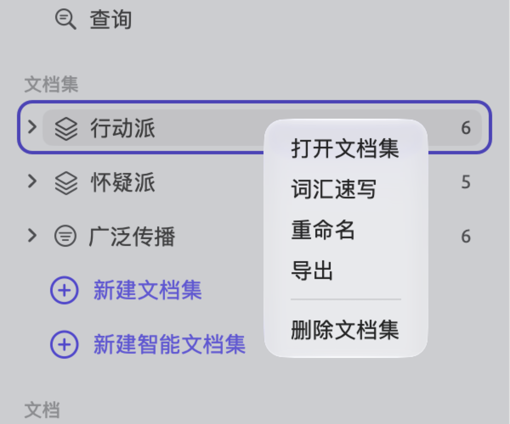
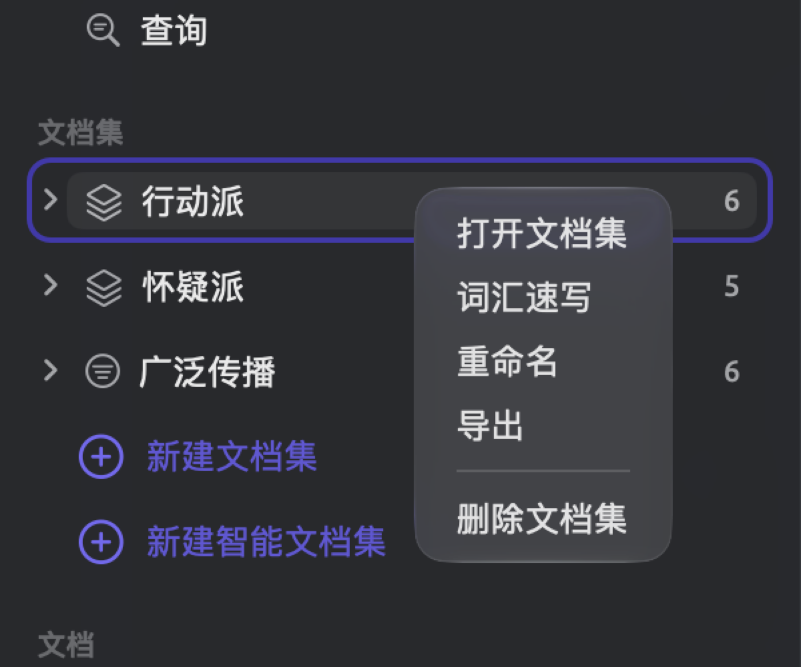
文件 ▸ 导出 ▸ LemmaLoom 文档集导出导航栏中当前高亮显示的文档集，或者当前标签页中打开的文档集。
归档会打包文档集中的所有文档，包括它们的译文。因此，“行动派”的归档中有七个文档，即六篇行动派文本和“时间不多了 (英语)”，后者是该文档集中一个文档的译文。文档集归档不包含编码集、词典，也不包含上表所列之外的任何编码。如果同事需要你完整的编码框架，请另外发送一份以 REFI-QDA 格式导出的编码本（见本章后文的REFI-QDA 编码本）。
导出智能文档集时，归档会带上导出那一刻满足其条件的文档，以及这些条件本身。导入另一个项目后，智能文档集会把条件重新应用于该项目的所有文档，因此匹配的文档可能比导出时更多。从“气候辩论”导出智能文档集“广泛传播”（它收集“读者数”大于或等于 100,000 的文档）时，归档中有它的六个文档，另外还有“时间不多了 (英语)”，因为它的原文就在这六个文档之中。如果同事的项目中有“读者数”属性，这个智能文档集也会收入她那些取值大于或等于 100,000 的文档。
要把带有某个标签的所有文档交给别人，先在标签部分点按这个标签，查看哪些文档带有它，然后在文档部分选中这些文档，再按下一节的说明导出。
导出文档
如果只是为了某个一次性的用途与同事分享几篇文本，例如请对方作为第二位读者审读三篇怀疑派文本，就导出单个文档。如果这些文档应当作为一个有名称的集合交到对方手中，请导出文档集，因为这样归档会把文档集一起带上。
- 在导航栏的文档部分点按一个文档。要导出多个文档，按住 ⌘ 键点按其他每个文档，或者按住 ⇧ 键点按，选中连续的一组文档。
- 选取文件 ▸ 导出 ▸ LemmaLoom 文档，或者右键点按其中一个选中的文档，然后选取导出。
- 存储对话框建议使用文档的标题；如果选中了多个文档，则建议使用项目的名称。选择文件夹并点按保存。
- 对话框显示 LemmaLoom 归档已导出后，点按完成。
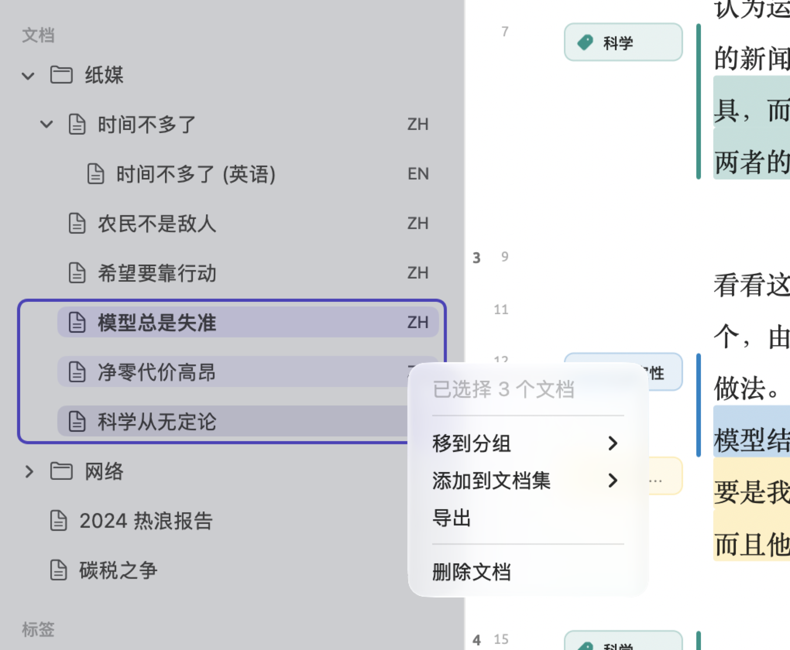
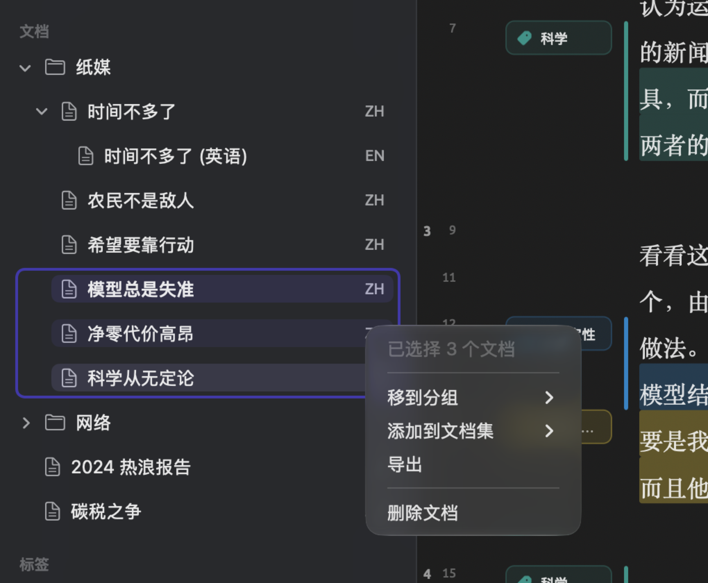
如果导航栏中没有选中任何文档，文件 ▸ 导出 ▸ LemmaLoom 文档会导出当前标签页中的文档。
导出原文文档时，它的所有译文也会一并导出。因此，导出“时间不多了”时，也会导出“时间不多了 (英语)”。如果单独导出一篇译文，它导入后是一个普通文档，带有自己的内容和编码实例。
导入归档
导入归档时会发生什么，取决于归档的范围：
- 项目归档导入后会成为一个新项目，并沿用原项目的名称、颜色和标签等信息，与当前项目是哪一个无关。
- 文档集归档或文档归档会导入当前项目。如果没有当前项目，导入会失败，并显示消息请先打开一个项目，再导入。如果你还没有任何项目，请先新建一个空项目（见第 2 章“开始使用”中的新建项目）。
导入归档的步骤如下：
- 如果是文档集或文档的归档，先在导航栏中点按要接收它的项目。如果是项目归档，跳过这一步。
- 选取文件 ▸ 导入 ▸ LemmaLoom 归档。
- 选择
.llz文件，然后点按打开。
你也可以在访达中连按 .llz 文件，导入方式与上面相同。把同一个项目归档再导入一次，会得到两个名称完全相同的项目，这时应重命名其中一个（见第 3 章“项目与文档”中的项目的快捷菜单）。
导入的文档立即带有索引，可以直接用于透镜、语法检查器和查询。随后，LemmaLoom 会在后台检查资料库，只为缺少的部分建立索引（见第 21 章“分析与索引”）。录音也会复制到资料库中。
要移除一次归档导入带来的所有内容，删除新建的项目即可。如果是文档集或文档的归档，请删除导入的文档和文档集（见第 3 章“项目与文档”中的删除文档），再删除这次导入添加的编码、分组或属性，例如下文示例中的“适应”。
把项目转移到另一台 Mac
- 在第一台 Mac 上，在导航栏中点按项目，然后选取文件 ▸ 导出 ▸ LemmaLoom 项目。
- 把
.llz文件拷贝到另一台 Mac，例如通过隔空投送或外置驱动器。 - 在另一台 Mac 上，在访达中连按这个文件；或者选取文件 ▸ 导入 ▸ LemmaLoom 归档，选择这个文件，然后点按打开。
- 打开几个文档，检查编码实例、备忘录和录音是否都在。
- 如果第一台 Mac 上不再需要这个项目，就在那里将它删除。
可用范围设为所有项目的查询保存在资料库中。拷贝整个资料库，会一次拷贝其中所有的项目和查询；具体方法见第 2 章“开始使用”中的工作保存在哪里。
归档如何并入现有项目
把文档集归档或文档归档导入现有项目时，其中的文档会添加进来，并按名称与项目中已有的内容对应起来。
- 无论接收项目中是否已有标题相同的文档，文档都会添加进来；因此，再次导入同一个归档会产生重复的文档。
- 分组按名称匹配，不区分大小写，名称前后的空格也忽略不计。匹配分组中的文档会移入目标项目中的那个分组。
- 编码在同一个上级编码之下按名称匹配，不区分大小写，也不计名称前后的空格。引用该编码的编码实例、备忘录和查询会自动改为引用接收项目中的编码。编码的描述和颜色保持目标项目中的原样，而归档中与该编码相关的备忘录会合并到这个编码上。该编码上的属性按名称相互匹配。受限编码总是会添加；如果它所限定的文档或文档集不在归档中，它导入后会成为整个项目的编码。
- 属性按名称匹配。类型不同时，以目标项目中的属性类型为准。值会按类型转换，无法转换的值会被舍弃。
- 文档集总是会添加，即使项目中已有同名的文档集也是如此，因此会出现重复。导入的智能文档集的条件会随值的转换而相应转换。
- 已存储的查询会添加进来；这些查询仍然属于当初为之存储的文档、文档集或标签。
- 自定义分析器在各项目之间通用，新的分析器会添加进来，位于窗口 ▸ 分析器中。
导入同事的文档集
假设一位同事和你研究的是同一场辩论，她发给你 读者来信.llz，其中是她自己项目中的一个文档集，包含四封读者来信。在导航栏中点按“气候辩论”，然后导入这个 .llz 文件。下表概括了归档中的分组、编码、属性和文档集会受到怎样的影响。
| 归档中 | “气候辩论”中 | 结果 |
|---|---|---|
| 分组“纸媒” | 分组“纸媒” | 来自“纸媒”的来信加入现有的分组。 |
| 编码“时间节点”（名称末尾多一个空格），位于“紧迫性”之下 | 编码“时间节点”，位于“紧迫性”之下 | 匹配，因为匹配时忽略名称前后的空格。她的编码实例现在使用你的“时间节点”。 |
| 编码“恐惧”，位于顶层 | 编码“恐惧”，位于“情绪”之下 | 分开处理，因为上级编码不同。添加一个新的顶层编码“恐惧”。 |
| 编码“适应” | 没有这个编码 | 添加。 |
属性“读者数”，类型为文本，取值为 120000、45000、310000 和 80000 左右 | “读者数”，类型为整数 | 值 120000、45000 和 310000 以数字形式导入。80000 左右是文本，因此被略去，这封来信的“读者数”保持为空。 |
| 文档集“读者来信” | 没有这个文档集 | 添加，包含那四封来信。 |
现在，“气候辩论”有 19 个文档，你的编码本中则有两个名为“恐惧”的编码，位于不同的位置。读者数为 120,000 和 310,000 的两封来信也加入了“广泛传播”，使它共有八个文档。如果两个编码含义相同，请按第 7 章“编码”中的合并编码将它们合并。缺少的“读者数”可以在文档信息中补上。
归档文件
.llz 文件是一个 ZIP 文件。把它解压缩，就可以手动查看其中的内容。
归档可以导入创建它的 LemmaLoom 版本或更新的版本（见本章前文的交换对话框）。如果你打算与同事交换归档，最好大家都使用最新版本的 LemmaLoom。
REFI-QDA 项目
REFI-QDA 项目文件（.qdpx）是 ZIP 文件，其中包含名为 project.qde 的项目描述文件（XML 格式），以及存放在 sources 文件夹中的文档。借助项目文件，你可以把项目分享给任何使用支持 REFI-QDA 格式的软件的人，也可以把这样一位同事的项目载入 LemmaLoom。
LemmaLoom 特有的数据，例如索引、已存储的查询、词典和分析器，只能通过 LemmaLoom 归档转移。
REFI-QDA 标准对一些常见元素使用不同的术语：
| REFI-QDA | LemmaLoom |
|---|---|
| 来源（Source） | 文档 |
| 选区（Selection） | 一段文字，通常已经编码 |
| 笔记（Note） | 备忘录 |
| 变量（Variable） | 属性 |
| 个案（Case） | LemmaLoom 为每个文档写出一个未命名的个案，其中保存该文档的属性值；来自其他程序的命名个案会成为一个文档集。 |
| 集合（Set） | 文档集或编码集 |
导出 REFI-QDA 项目
- 在导航栏中点按项目，例如“气候辩论”。
- 选取文件 ▸ 导出 ▸ REFI-QDA 项目。
- 存储对话框建议使用项目的名称。选择文件夹并点按保存。
- 对话框显示 REFI-QDA 项目已导出后，点按完成。
文件名为 气候辩论.qdpx。在另一个程序中寻找导入命令时，请查找 REFI-QDA 或 QDPX 字样。
LemmaLoom 按以下方式保存项目：
| LemmaLoom 中 | .qdpx 文件中 |
|---|---|
| 文本、PDF 和网页文档 | 文本来源，内容为文档的当前文本 |
| 音频和视频文档 | 音频或视频来源，带有录音和转写文本。转写文本的时间信息写成同步点，因此编码实例仍与它们在录音中的位置相对应。 |
| 译文 | 各自独立的来源：译出的文本为文本来源，译出的录音为音频或视频来源，并带有录音的独立副本。 |
| 作者、日期、出版物、出版方、URL 和 DOI | 来源的描述，每个字段一行，字段名使用界面语言，例如 日期: 2024-08-21 |
| 编码，连同层级、颜色和描述 | 编码本 |
| 编码实例 | 已编码的选区，带有每个编码实例的创建日期 |
| 一段文字上的备忘录 | 选区上的笔记 |
| 已编码备忘录（见第 7 章“编码”中的已编码备忘录） | 这段文字上同一编码的编码实例所附的笔记；如果这段文字没有这样的编码实例，则为选区上的笔记 |
| 整个文档、编码或项目上的备忘录 | 来源、编码或项目上的笔记 |
| 链接 | 选区之间的链接，带有颜色。关系成为链接的名称，评论成为一条笔记。 |
| 属性 | 变量。选择器成为普通的文本变量。 |
| 属性值 | 每个文档一个个案，其中保存该文档的值 |
| 文档集和智能文档集 | 来源集合。智能文档集按导出时所含的文档写出。 |
| 分组 | 来源集合，以分组的名称命名 |
| 编码集 | 编码集合 |
文件中不包含：
- 索引以及以索引为基础的一切，例如文本统计和词汇速写（LemmaLoom 会为导入的文档重新建立索引）；
- 已存储的查询、基于查询的透镜、词典、自定义分析器和书签；
- 文档、编码、备忘录和链接上的标签；
- 文档的颜色和语言、转写文本中的说话人姓名，以及编码实例和备忘录上的属性值；
- 译文与原文之间的关联；
- 编码对某个文档或文档集的范围限定，也就是说，这类编码导入后都会成为项目编码；
- 编码的格式，也就是说，所有编码导入后都会使用高亮；
- 大于 2 GB 的录音；这样的文档会保存为只含转写文本的文本来源。
导出的文件把你记为作者，使用你 macOS 用户账户的全名。文件还会把 LemmaLoom 及其确切版本记为项目的创建程序。
导入 REFI-QDA 项目
- 选取文件 ▸ 导入 ▸ REFI-QDA 项目。
- 选择
.qdpx文件，然后点按打开。 - 导入完成后，打开两三个文档，检查编码实例是否落在当初编码的词语上。
在访达中连按 .qdpx 文件，会以完全相同的方式导入。每次导入都会新建一个项目。项目使用文件中存储的名称；如果没有，就使用文件名。新建的项目会成为当前项目，其中的文档在后台建立索引。你可以在活动窗口中查看索引进度。如有需要，可以删除这个项目，再重新导入 .qdpx 文件，把整个过程重做一遍。
LemmaLoom 按以下方式读取文件：
.qdpx 文件中 | LemmaLoom 中 |
|---|---|
| 文本来源 | 带有来源文本的文档。富文本来源中的格式会被舍弃。 |
| PDF 来源 | 带有 PDF 文本的文档，文本取自另一个程序存储的文本版本，没有时则从 PDF 本身读取 |
| 带转写文本的音频和视频来源 | 音频或视频文档。转写文本成为文档的文本，其中的同步点成为带有时间的文字片段。如果文件中包含录音，录音会复制到资料库中。 |
| 不带转写文本的音频和视频来源、图片来源，以及没有任何文本的来源，例如没有文本层的扫描 PDF，或者文件中引用了却并未包含的来源 | 略去 |
| 来源的描述 | 如果描述采用 LemmaLoom 导出时的格式，且字段名为英语或你的界面语言，就成为文档的作者、日期和其他文档信息；否则成为文档上的一条备忘录 |
| 编码 | 整个项目的编码，连同层级、颜色和描述 |
| 选区的编码实例 | 同一段文字上的编码实例，连同日期 |
| 对整个来源的编码实例 | 对文档全部文本的编码实例 |
| 选区的描述 | 这段文字上的备忘录 |
| 笔记 | 选区上的笔记成为这段文字上的备忘录，编码实例上的笔记成为已编码备忘录。来源或编码上的笔记成为文档或编码上的备忘录。不属于任何对象的笔记成为项目备忘录，链接上的笔记成为链接的评论。 |
| 选区之间的链接 | 链接。链接的名称成为关系。 |
| 变量 | 属性。Integer 成为整数，Float 成为小数，Boolean 成为布尔值，Date 和 DateTime 成为日期，其他类型都成为文本。 |
| 个案 | 个案中的值赋给属于该个案的文档。命名个案还会成为由这些文档组成的文档集。 |
| 集合 | 文档集和编码集 |
没有名称的来源会以导入的文档为标题。如果从另一个应用程序导入后缺少文档，请在那个程序中重新导出项目，并确认导出的文件中包含了这些来源。
每个文档的语言根据其内容确定。如果判断有误，可以在文档信息中手动更正；LemmaLoom 随后会按所选语言为文档重新建立索引（见第 3 章“项目与文档”中的索引）。
由于 LemmaLoom 只能对文本编码，针对 PDF 页面或图片中某个区域的编码实例都会被舍弃。
文件中的选区记录了起止位置，两者都以字符数计，通常还附有选区内文本的一段摘录。不同程序计算字符数的方式不同；有的程序把一个换行算作两个字符。LemmaLoom 会逐一尝试常见的计算方式，保留摘录正确对应比例最高的那一种。
REFI-QDA 编码本
REFI-QDA 编码本文件（.qdc）只包含一组编码（连同它们的层级、颜色和描述）以及编码集。
导出编码本
- 在导航栏中点按项目。
- 选取文件 ▸ 导出 ▸ REFI-QDA 编码本。
- 存储对话框建议使用项目的名称。选择文件夹并点按保存。
- 对话框显示 REFI-QDA 编码本已导出后，点按完成。
编码本按层级包含你的每一个编码。凡是含有编码的编码集，都会连同其中的编码一起出现。限定于某个文档或文档集的编码会像其他编码一样写出，但不带限定，导回后成为整个项目的编码。
导入编码本
导入的编码会进入当前项目。
- 在导航栏中点按要接收这些编码的项目。
- 选取文件 ▸ 导入 ▸ REFI-QDA 编码本。
- 选择
.qdc文件，然后点按打开。
在访达中连按 .qdc 文件，也会以同样的方式导入。
对于导入文件中的每个编码，LemmaLoom 会在同一上级编码下的同级编码中查找名称相同的编码，不区分大小写。如果找到，就使用这个编码，并继续处理它的子编码。如果找不到，就新建一个编码，它的颜色和描述取自导入的文件。编码集也以同样的方式匹配：文件中有、而匹配到的编码集中还没有的编码，会添加到该编码集中。
整个导入只占一个撤销步骤。选取编辑 ▸ 撤销REFI-QDA 编码本或按下 ⌘Z，所有添加的编码和编码集都会被移除，添加的编码也会从原有的编码集中移出。
导入研究小组的编码本
例如，假设一个研究小组发来 气候修辞.qdc，其中有编码“科学”及其子编码“不确定性”和“共识”，一个顶层编码“反讽”，以及一个包含“不确定性”和“共识”的编码集“论点”。把它导入“气候辩论”后，LemmaLoom 会对编码本做如下更改：
- 顶层编码“科学”及其子编码“不确定性”在“气候辩论”中已经存在。
- “科学”的子编码“共识”会被导入，与“不确定性”并列。
- 顶层编码“反讽”会被导入，与现有的顶层编码并列。
- 编码集“论点”原本包含编码“科学”“不确定性”“成本”和“责任”，现在会新增编码“共识”。
导出表格和图表
大多数表格可以导出为 CSV 文件，大多数图表和图示可以导出为 PNG 或 PDF 图片。
导出按钮
导出按钮的样子是一个带向上箭头的方框。它出现在表格或图表的标题处、项目视图栏中各视图的标题栏中，或者词汇速写的工具栏中。导出按钮有两种工作方式：
- 在不附属于任何图表的表格旁，点按按钮会立即打开存储 CSV 文件的对话框。将鼠标指针悬停在按钮上，会显示导出为 CSV。
- 在图表或图示旁，点按按钮会打开一个菜单，其中有 PNG 和 PDF；如果图表背后有表格，还有 CSV。将鼠标指针悬停在按钮上，会显示导出。结构图示和马赛克只能导出 PNG 和 PDF。
有可导出的内容时，这个按钮才会出现。在项目视图栏的编码实例、备忘录和链接视图中，以及关系和词汇速写的工具栏中，按钮始终可见。在这些地方，如果没有可导出的内容，按钮不可用，并显示没有可导出的内容。在属性窗口和图示窗口（见第 11 章“语法检查器”中的图示窗口）中，按钮上写着导出。
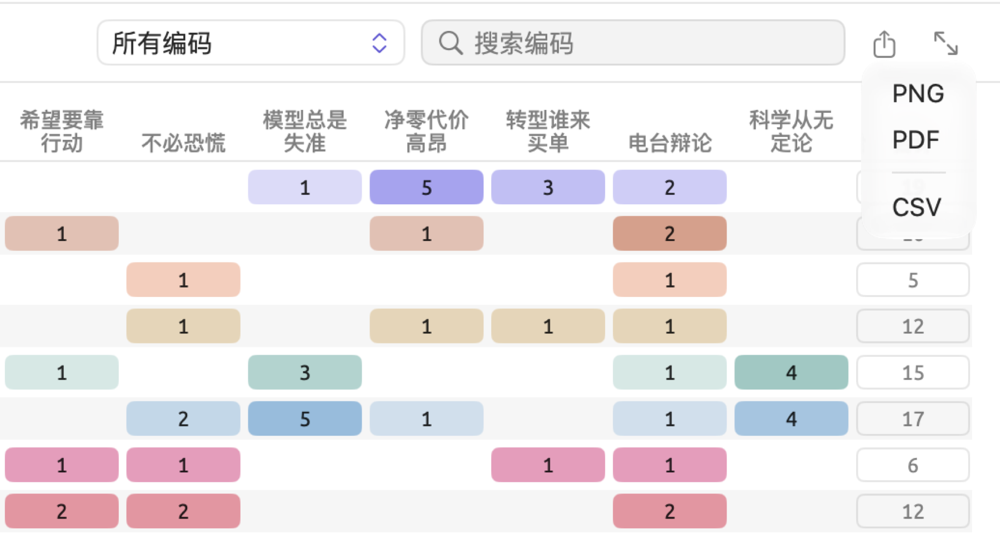
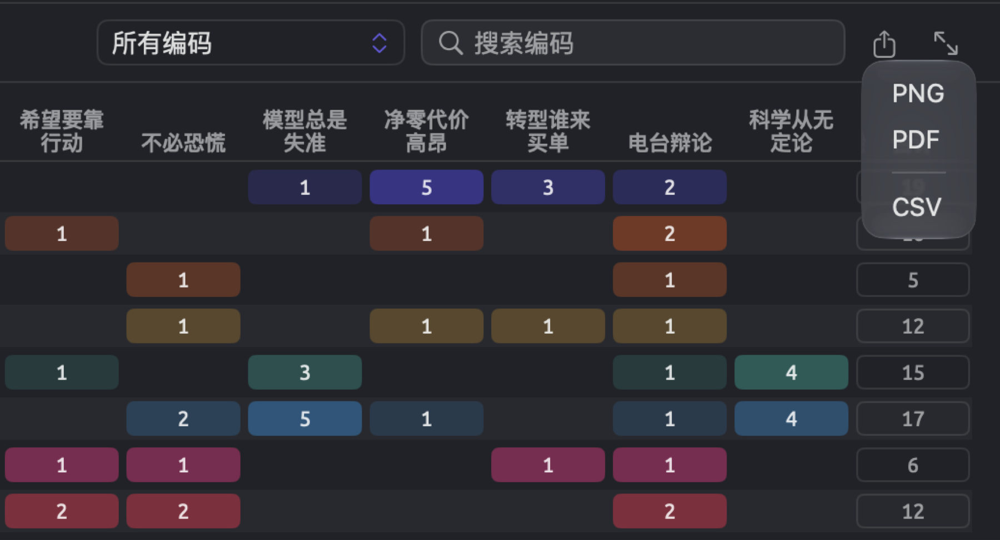
导出步骤如下：
- 把视图设置成你想要的样子，选好所需的编码、筛选条件、搜索内容和显示方式。
- 点按导出按钮；如果打开了菜单，选择一种格式。
- 可以按需修改建议的名称，然后选择文件夹并点按保存。
建议的文件名由文档、文档集或项目的名称加上导出的内容组成，例如 时间不多了-codings 或 气候辩论-code-matrix。不过，某些语法视图的文件名反映的是你搜索的词，例如搜索气候一词时的 collocates-气候 或 word-sketch-气候。
导出的内容就是视图中可见的全部内容。所有搜索或筛选条件都会带到文件中，包括编码本中的标签筛选和查询结果的筛选字段。速写空间中隐藏的扇区和你选择的显示方式也会保留。
CSV 文件
CSV 文件是以逗号分隔数值的纯文本文件。每行中每列一个值，值与值之间用逗号分隔。第一行是各列的名称，使用界面语言。电子表格和统计分析应用程序都可以读取 CSV 文件。
LemmaLoom 导出 CSV 文件时遵循以下格式规则：
- 文件中的所有文本都采用 UTF-8 编码，并以字节顺序标记开头，以便电子表格应用程序识别这种编码。
- 无论你在 Mac 上选择了哪种地区设置，所有数字都写成纯数字加小数点，例如
1234.5。名称以 (%) 结尾的列包含百分比，写成百分之几的数值，例如 12.35% 写作12.35。 - 如果单元格中含有逗号、双引号或换行符，或者以空格开头或结尾，就会按照 CSV 格式的标准用双引号括起来。
- 以
=、+、-或@开头且无法解析为数字的单元格，开头会加一个撇号，以免电子表格应用程序错误解读其值，例如把+ 对照报告核对一下这些数字这样的备忘录当作公式。
检查器文本标签页中概览分面的统计数据是个例外，它的 CSV 文件按检查器中显示的样子保存所有值，如有单位，也会带上单位。例如，一个值会写成 13.9 个词。
如果电子表格应用程序设置为以逗号作小数分隔符的语言（例如德语），它可能默认各列之间用分号分隔，从而把整行放进一个单元格。遇到这种情况，请用该应用程序中导入文本或 CSV 文件的命令打开文件，并选择逗号作为分隔符。
PNG 和 PDF 图片
导出时，图片会重新绘制。它带有边距，背景颜色与当前主题一致，宽度由图表本身决定。悬停高亮和选中状态不会出现在图片中。
- PNG 格式按 Retina 品质绘制，与你使用的显示器无关。PNG 适合用于演示文稿、网站以及用文字处理软件制作的文档。
- PDF 只有一页，尺寸与图表相同。无论放大到什么程度，PDF 中的所有内容都保持清晰。它适合印刷，以及要求矢量图的学术期刊。
使用深色主题时导出的图片也是深色的。如果图片要用于论文，请在导出前把主题设置改为较浅的主题，例如浅色（见第 24 章“设置与外观”中的主题）。
查询结果
查询结果的导出按钮位于查询结果栏的最右侧，在结果本身的上方。在文档的查询分面中，导出按钮位于分面最顶部的横栏中。可用的格式有 CSV、Markdown、PNG 和 PDF，其后是拷贝。建议的文件名就是查询的名称。Markdown 文件把结果与查询本身、查询的范围、读取的文档数、查询所用的语料设置、导出日期以及 LemmaLoom 版本保存在一起。

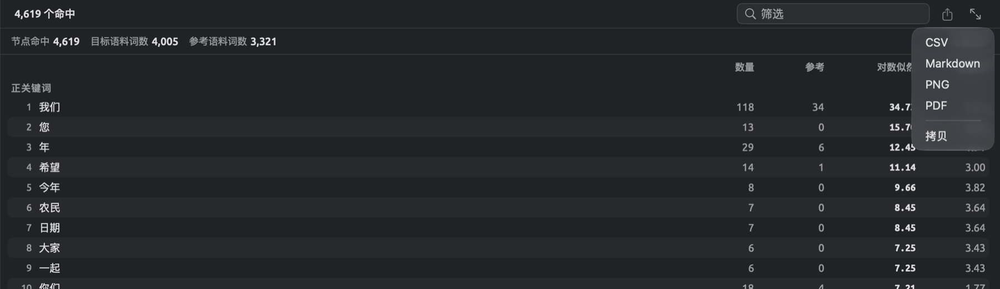
拷贝会把表格放到剪贴板上，各列的值之间用制表符分隔。导出查询结果所生成的文件，在第 16 章“查询结果与统计”中的导出结果有更详细的说明。
哪些位置提供导出
在检查器中：
| 标签页 | 位置 | 格式 | CSV 文件的列 |
|---|---|---|---|
| 文本 | 概览中概览部分的标题旁 | CSV | 部分、度量和值，包括五个部分的每项度量，然后是三个图表的各行 |
| 文本 | 概览中的词类、句法功能和短语图表 | PNG、PDF、CSV | 类别、数量 |
| 文本 | 书签 | CSV | 位置、文本、评论 |
| 语法 | 结构中的每个图示，以及图示窗口 | PNG、PDF | |
| 语法 | 形式 × 功能中的矩阵 | PNG、PDF、CSV | 形式、合计，然后每种功能一列 |
| 语法 | 形式 × 功能中某个单元格的列表 | CSV | 句子、短语、文本 |
| 语法 | 搭配词 | CSV | 排名、搭配词、词类、频次、期望值、对数似然比、MI、MI3、t 值、z 值、Dice、logDice（包括所有分数，无论列表按哪一个排序） |
| 语法 | 词汇速写 | 图谱和网状图显示方式为 PNG、PDF 和 CSV，列表为 CSV | 关系、搭配词、词元、词类、频次、logDice |
| 语法 | 语篇 | CSV | 类别、句子、文本、详情 |
| 编码 | 编码中的编码系统旁 | CSV | 与编码本相同，见下文 |
| 编码 | 编码实例，选择编码实例时 | CSV | 编码、位置、开始、结束、文本 |
| 编码 | 编码实例，选择备忘录时 | CSV | 编码、位置、文本、备忘录、标签 |
| 编码 | 链接 | CSV | 与链接相同，见下文 |
| 编码 | 编码统计中的编码频率与覆盖率 | PNG、PDF、CSV | 编码、片段、字符数、覆盖率 (%) |
| 编码 | 编码统计中的共现 | CSV | 编码、编码、重叠次数、字符数、φ、p |
| 编码 | 编码统计中属性分布下的每个图表 | PNG、PDF、CSV | 属性、值、数量 |
| 编码 | 画像中的马赛克 | PNG、PDF | |
| 编码 | 画像中的编码行 | CSV | 句子、编码、文本 |
| 编码 | 编码速写 | 图谱为 PNG、PDF 和 CSV，列表为 CSV | 与词汇速写相同 |
| 多重模式 | 速写空间 | 图谱为 PNG、PDF 和 CSV，列表为 CSV | 编码或属性，其余与词汇速写相同 |
| 多重模式 | 查询 | CSV、Markdown、PNG、PDF、拷贝 | 见第 16 章“查询结果与统计”中的导出结果 |
这些度量都在各自所属的章节中有解释，并汇总在第 27 章“统计量一览”中。
在项目视图栏的视图中（范围为项目、文档集或标签）：
| 视图 | 位置 | 格式 | CSV 文件的列 |
|---|---|---|---|
| 编码本 | 编码列表下方的栏 | CSV | 编码、路径、层级、数量、描述、颜色 |
| 编码本 | 选中编码的详细信息中的此范围内的使用 | PNG、PDF、CSV | 文档、片段 |
| 编码实例 | 标题栏 | CSV | 文档、编码、文本、开始、结束，然后编码实例上的每个属性一列 |
| 备忘录 | 标题栏 | CSV | 文档、编码、备忘录、标签、开始、结束，然后备忘录上的每个属性一列 |
| 链接 | 标题栏 | CSV | 源文档、源文本、关系、目标文档、目标文本、评论、标签 |
| 编码统计 | 标题栏 | PNG、PDF、CSV | 编码、片段、文档、字符数、覆盖率 (%) |
| 编码统计 | 属性分布下的每个图表 | PNG、PDF、CSV | 属性、值、数量 |
| 编码矩阵 | 标题栏 | PNG、PDF、CSV | 编码，然后每个文档或组一列，以及合计 |
| 关系 | 标题栏，选择网格时 | PNG、PDF、CSV | 编码、片段，然后每个编码一列 |
| 关系 | 标题栏，选择配对时 | CSV | 编码、编码、重叠次数、字符数、φ、p |
| 词汇速写 | 与检查器中相同 | PNG、PDF、CSV | 与检查器中相同 |
| 词典 | 类别频率和按文档 | PNG、PDF、CSV | 见第 19 章“词典”中的导出计数 |
| 查询 | 结果栏 | CSV、Markdown、PNG、PDF、拷贝 | 见第 16 章“查询结果与统计”中的导出结果 |
编码本窗口、词汇速写窗口、窗口 ▸ 查询以及在单独窗口中打开的查询结果，也提供同样的导出功能。在属性窗口中，导出会输出属性表（见下文的属性值）。
导出文件中的开始和结束以从文档文本开头算起的字符数表示一段文字的位置。位置按检查器中的显示方式，给出这段文字所在的段落和句子编号；因此，¶12·3 表示第 12 段的第 3 句。
导出按属性、分组、语言或格式归组的编码矩阵时，每个组各占一列，然后是合计列和所用检验的各列。第一行给出每个组的基数。第 13 章“编码分析”中的导出表格和图表说明这项功能生成什么样的文件，检验组间差异则说明其中数字的含义。
编码本的 CSV 文件
列表中显示的每个编码都会出现在编码本的 CSV 文件中，每个编码占一行，后面紧跟它的子编码。每一层的编码都按名称顺序排列。下面是“气候辩论”的文件中的几行：
| 编码 | 路径 | 层级 | 数量 | 描述 | 颜色 |
|---|---|---|---|---|---|
| 科学 | 科学 | 1 | 15 | 对研究、测量、模型和专家的援引，以及关于科学如何运作的论证。 | #0D9488 |
| 不确定性 | 科学 / 不确定性 | 2 | 17 | 对预估、区间和误差范围的怀疑，以及被表述为暂定结论的说法。 | #0284C7 |
| 情绪 | 情绪 | 1 | 6 | 作者表达的或归于他人的情感，例如悲伤、绝望、愤怒或疲惫。 | #DB2777 |
| 恐惧 | 情绪 / 恐惧 | 2 | 12 | 对气候变化的恐惧和焦虑，以及关于恐惧是有益还是有害的争论。 | #E11D48 |
| 希望 | 情绪 / 希望 | 2 | 11 | 希望以及对改变能够实现的信心，还有作者如何表述它们。 | #9333EA |
| 责任 | 责任 | 1 | 19 | 谁造成了问题，谁应当行动或付钱，以及对他人（包括子孙后代）负有什么义务。 | #65A30D |
- 路径把从顶层往下的各级编码名称连在一起，中间用斜杠分隔，这样就能区分名称相同但位于不同上级编码之下的编码。
- 层级表示编码位于层级结构的哪一层：1 表示顶层编码，2 表示这些编码的子编码，依此类推。
- 数量就是编码树中每个编码旁边显示的数字，即在你导出其编码本的项目、文档集或标签范围内，该编码在原文文档中被使用的次数。“情绪”只包括“情绪”本身的 6 次使用，不包括“恐惧”或“希望”，它们各有自己的数量（分别为 12 和 11）。
检查器编码分面中编码系统旁的导出具有相同的列。不过，这里的数量统计的是当前打开的文档中的使用次数，已编码备忘录也计算在内。
链接的 CSV 文件
链接建立在两段文字之间，这两段文字通常来自不同的文档（见第 7 章“编码”中的链接）。导出的 CSV 文件中，每个链接占一行：
| 源文档 | 源文本 | 关系 | 目标文档 | 目标文本 | 评论 | 标签 |
|---|---|---|---|---|---|---|
| 模型总是失准 | 光是云这一项，大概就藏着比任何新闻稿所承认的更多的不确定性。 | 相矛盾 | 2024 热浪报告 | 这一估计的不确定性范围较大，引用时必须一并注明。 | 气象气候局直截了当地说明了自己的不确定性范围；专栏却认定官方来源会把它藏起来。 |
关系是创建链接时输入的文字。标签列出与链接关联的所有标签，标签之间用分号分隔；本例中标签为空。从项目视图栏的链接视图导出，会得到所选项目、文档集或标签中列出的所有链接。检查器的链接分面导出当前打开的文档的链接。
编码片段和备忘录
项目视图栏的编码实例视图为每个编码实例导出一行。如果在编码实例上记录了属性值，这些属性会成为额外的列；某个编码实例没有取值时，对应的单元格为空。
项目视图栏的备忘录视图与此类似，只是用备忘录的文本和标签代替已编码的文本。对于已编码备忘录，其编码的名称写在该行的编码列中；未编码的备忘录，这一列为空。已编码备忘录继承其编码的标签，所以备忘录行的标签单元格填的是这些标签；要获取备忘录自己的标签，可以使用检查器的编码实例分面，并选择备忘录。在项目的备忘录视图中，不属于任何文档的备忘录也各占一行，文档列为空。
属性值
要打开属性窗口，请选取项目 ▸ 属性，或者右键点按项目，然后选取属性。导出会按表格当前显示的样子存储其内容，包括一个文档列，每个属性各占一列。搜索后仍然可见的每个文档各占一行，顺序与显示的相同。译文与原文共用一行，也共用原文的属性值。


这个文件采用的正是窗口中导入功能所要求的格式。如果需要一次更新大量取值，可以先导出表格内容，在电子表格程序中编辑，再把它导入回来（见第 4 章“导入资料”中的从电子表格导入属性值）。